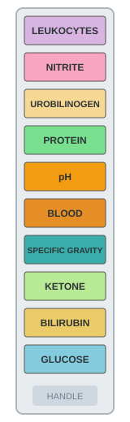

Interactive Test Strip Image Map
Click on any of the 10 reagent pads on the strip image below to jump directly to its clinical diagnostic description:

Reagent Pad Diagnostic Descriptions
1. Leukocytes
Detects leukocyte esterase released by white blood cells. A positive result strongly suggests pyuria, cystitis, or pyelonephritis.
2. Nitrite
Detects conversion of nitrate to nitrite by Gram-negative bacteria such as Escherichia coli. Diagnostic for active bacterial urinary tract infection.
3. Urobilinogen
Formed by bacterial degradation of bilirubin in the intestines. Elevated levels indicate hemolytic anemia or hepatocellular damage.
4. Protein
Primarily sensitive to albumin. Proteinuria indicates glomerular permeability impairment, preeclampsia, or diabetic nephropathy.
5. pH
Measures urinary acidity or alkalinity (normal 4.5 - 8.0). Helps evaluate renal tubular acidosis, metabolic status, and risk of renal calculi.
6. Blood
Detects intact erythrocytes, free hemoglobin, and myoglobin through pseudoperoxidase activity. Indicates trauma, stones, or glomerular lesions.
7. Specific Gravity
Measures the concentration of ionic solutes in urine. Normal values range from 1.005 to 1.030, indicating renal concentrating capacity and hydration state.
8. Ketones
Detects acetoacetic acid resulting from fatty acid oxidation. Significant in screening diabetic ketoacidosis, starvation, and metabolic stress.
9. Bilirubin
Presence of conjugated bilirubin in urine indicates biliary obstruction, hepatitis, or early liver disease before clinical jaundice develops.
10. Glucose
Utilizes glucose oxidase reaction to detect glycosuria. Indicates serum glucose surpassing the renal threshold, as seen in diabetes mellitus.